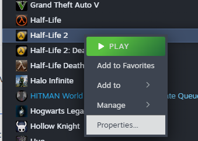
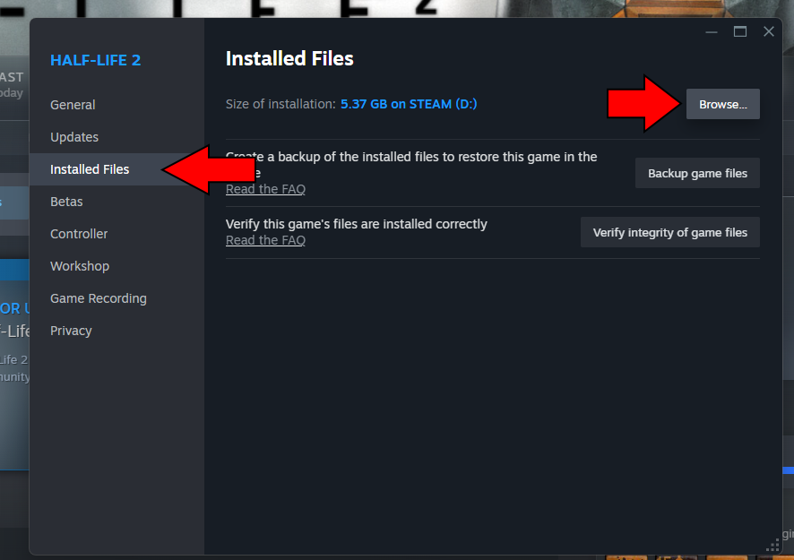
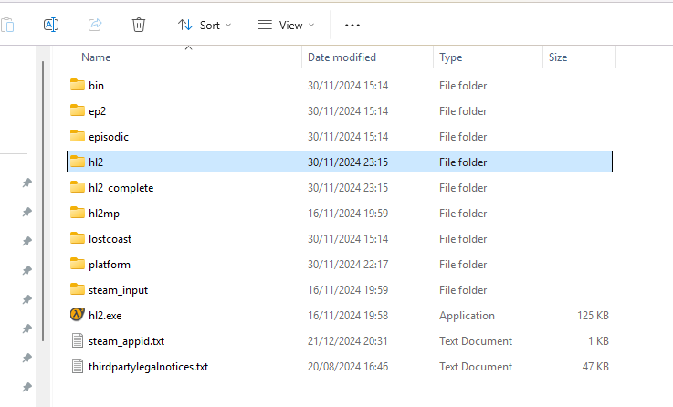
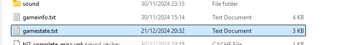

Check your caches
Upload the gamestate.txt file from your Half-Life 2 install directory. Everything is processed in your browser — the file is never sent to a server.
How do I find my gamestate.txt file?
Regardless of which operating system you're using, the easiest way to find your gamestate.txt file is to open the properties of Half-Life 2 in your Steam library:

In the box that pops up, click "Installed Files" and then click the "Browse" button:

From there, you can navigate to either the "hl2" directory or the "hl2_complete" directory:
The "hl2_complete" directory is present if you have Half-Life 2, Episode One and Episode Two installed or if you have the 20th Anniversary Edition of Half-Life 2 installed.

Once you're in the correct directory, you should see the gamestate.txt file:

All 45 lambda caches, by chapter
Half-Life 2 hides 45 lambda caches across 11 chapters. This table shows how many are in each chapter, in the order you encounter them, with a timestamped video guide for every chapter.
| Chapter | Caches | Running total | Video guide |
|---|---|---|---|
| A Red Letter Day | 1 | 1 | 0:00 |
| Route Kanal | 7 | 8 | 0:05 |
| Water Hazard | 10 | 18 | 1:16 |
| Black Mesa East | 1 | 19 | 4:11 |
| We Don't Go To Ravenholm | 4 | 23 | 4:20 |
| Highway 17 | 5 | 28 | 5:22 |
| Sandtraps | 2 | 30 | 7:04 |
| Nova Prospekt | 3 | 33 | 7:45 |
| Entanglement | 1 | 34 | 8:16 |
| Anticitizen One | 10 | 44 | 8:25 |
| Follow Freeman | 1 | 45 | 10:36 |
| Total | 45 | Lambda Locator achievement | |
Frequently asked questions
How many lambda caches are there in Half-Life 2?
There are 45 lambda caches in Half-Life 2, spread across 11 chapters from A Red Letter Day to Follow Freeman. Finding all of them completes the Lambda Locator achievement.
How do I find my gamestate.txt file?
In Steam, right-click Half-Life 2, choose Properties, open the Installed Files tab and click Browse.
Then open either the hl2 or hl2_complete folder — gamestate.txt sits at the
top level.
Should I use the hl2 or hl2_complete folder?
Use hl2_complete if you have Episode One and Episode Two installed, or the 20th
Anniversary Edition of Half-Life 2. Otherwise use hl2.
Is my gamestate.txt uploaded to a server?
No. The file is read locally in your browser and never leaves your computer; the site has no server-side component.
What does the tracker read from gamestate.txt?
It extracts the data value from the GameState block entry with
id 86. That value is a 45-bit mask: bit N-1 is set when cache N has been
found, which is how the tool lists found and missing caches per chapter.
Do I need to install anything?
No. The tracker is a single static page with no dependencies, no build step and no account — open it in any modern browser.